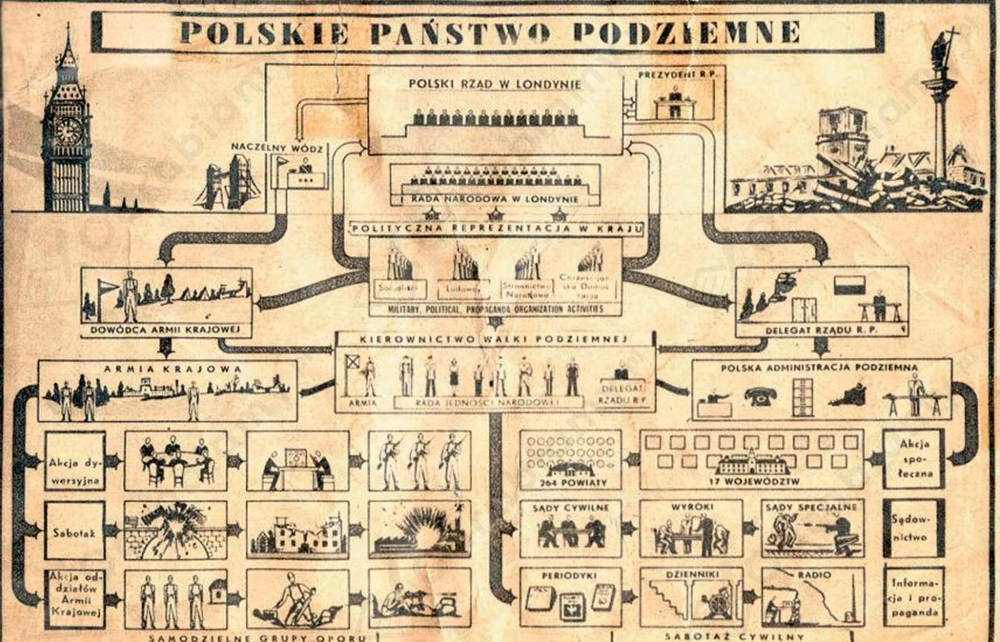

Charakterystyka struktur Polskiego Państwa Podziemnego:
- Delegat Rządu na Kraj - przedstawiciel rządu ma uchodźstwie,
- Rada Jedności Narodowej - polityczna reprezentacja w kraju, pełniła funkcje podziemnego parlamentu,
- Dowódca Armii Krajowej - dowodził siłami zbrojnymi w okupowanym kraju.
1) pion wojskowy:
- był reprezentowany przez Armię Krajową,
- do jego zadań należała działalność militarna i rozbudowa potencjału wojskowego,
- prowadzenie walki o suwerenność i niepodległość kraju
- pełnił funkcję łącznika między okupowaną Polską a Rządem na uchodźstwie,
- chronił pion cywilny i zapewniał bezpieczeństwo jego pracownikom.
2) pion cywilny:
- najważniejszym zadaniem było utrzymanie ciągłości instytucji państwowych, zapewnienie funkcjonowania państwu,
- przygotowanie państwa do przejęcia władzy po zakończeniu działań wojennych,
- utrzymanie ducha walki w społeczeństwie polskim.

Struktura Polskiego Państwa Podziemnego, źródło grafiki: Google Grafika.
Organizacje konspiracyjne, które nie podlegały polskiemu rządowi emigracyjnemu w Londynie: